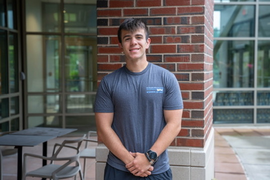

Biomedical engineer from Connecticut. Detail-oriented, quick to learn new tools, and happiest when I'm building and testing something real.
During my senior year of high school, I cared for my father at home through stage 4 colon cancer, managing his medication, IV pump, and wound care. It left me wanting better technology to catch disease sooner and treat it more precisely, and it's why I chose biomedical engineering.
I'm known for attention to detail and I take on the harder version of a problem when it's offered: I chose honors-level work on my ECG project and ranked the XR Microbioreactor first among senior design options. I simulate before I build (COMSOL, LTspice, MATLAB), design in SolidWorks, and validate against the spec on real hardware.
BS, Biomedical Engineering with Honors, Western New England University, 2026. GPA 4.0, Minor in Mathematics. Tau Beta Pi, Pi Mu Epsilon, Omicron Delta Kappa.
MS, Biomedical Engineering, Boston University (in progress). MBA, University of Hartford (expected 2027).
I'm looking for a full-time engineering role in medical devices in Connecticut, in R&D, quality, manufacturing, or controls. I'll finish my MS in Biomedical Engineering at Boston University part-time and my MBA at the University of Hartford in 2027. Get in touch or download my resume.